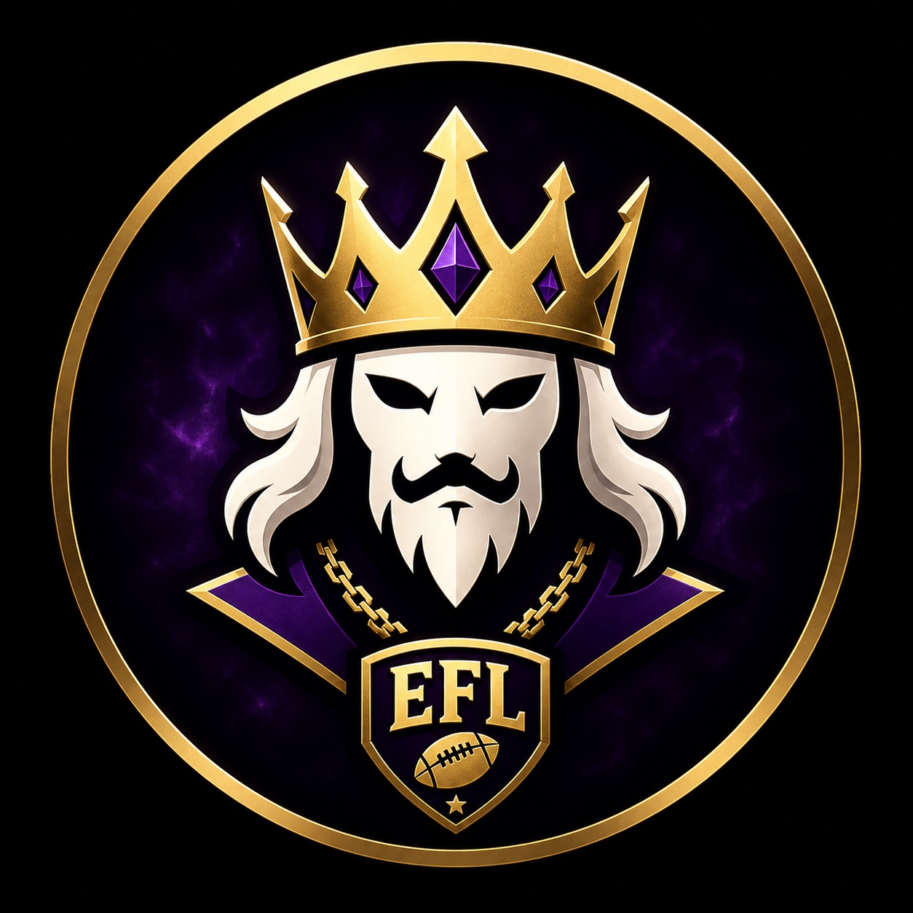

📣
League Announcements
Future home for draft dates, rule changes and important deadlines.

The commissioner page is the league's front office — rules, announcements, weekly notes and the place where EFL tradition gets protected.
A clean home for league operations as the site grows.
Future home for draft dates, rule changes and important deadlines.
Keep the league constitution and rulings easy for everyone to find.
A future weekly column for rankings takes, rivalries and league business.